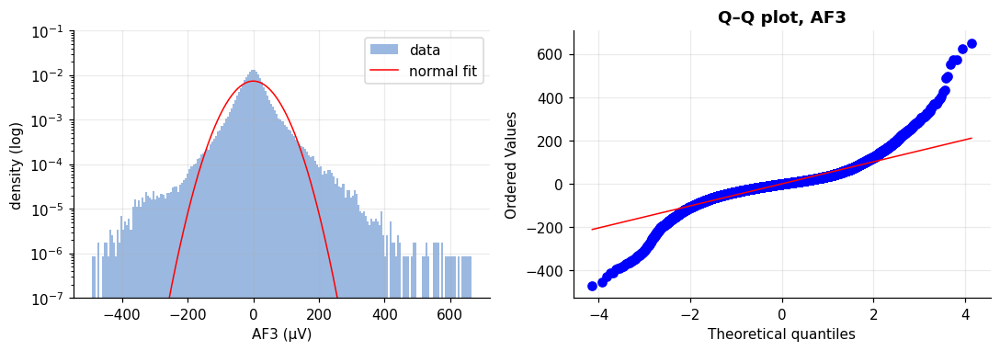
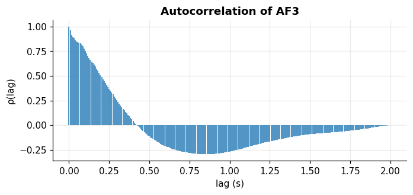
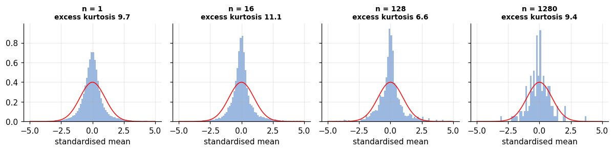
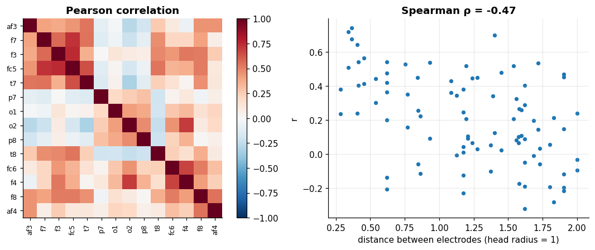

Descriptive and inferential statistics on signals#
Learning objectives
- Summarise a signal with location, spread and shape statistics, and choose robust ones when artifacts are present.
- Check normality with a histogram and a Q–Q plot, and interpret skewness and kurtosis.
- Understand why the usual i.i.d. formulas fail for time series: autocorrelation, effective sample size, block bootstrap.
- Measure dependence between channels (Pearson correlation) and relate it to distance.
- Run and interpret paired and independent two-sample tests, effect sizes, confidence intervals and multiple-comparison corrections.
You already know the toolbox of second-year statistics: mean, variance, confidence intervals, \(t\)-tests, correlation. The point of this chapter is to use it correctly on a signal, where observations are neither independent nor Gaussian.
Descriptive statistics of the 14 channels#
Definition: Location, spread and shape
Mean \(\bar x = \frac1N\sum x_n\); standard deviation \(s=\sqrt{\frac{1}{N-1}\sum (x_n-\bar x)^2}\); median; MAD (median absolute deviation) \(\mathrm{MAD}=\mathrm{median}|x_n-\mathrm{median}(x)|\), scaled by 1.4826 so that it equals \(\sigma\) for Gaussian data; skewness (asymmetry, 0 for a Gaussian) and excess kurtosis (tail weight, 0 for a Gaussian).
desc = pd.DataFrame({
"mean": X.mean(axis=1),
"std": X.std(axis=1, ddof=1),
"median": np.median(X, axis=1),
"MAD (scaled)": stats.median_abs_deviation(X, axis=1, scale="normal"),
"skewness": stats.skew(X, axis=1),
"excess kurtosis": stats.kurtosis(X, axis=1),
}, index=CH)
desc.round(2)
| mean | std | median | MAD (scaled) | skewness | excess kurtosis | |
|---|---|---|---|---|---|---|
| af3 | 0.1 | 54.06 | -0.86 | 33.03 | 0.33 | 9.72 |
| f7 | 0.1 | 52.47 | 0.88 | 31.98 | -0.08 | 7.14 |
| f3 | 0.09 | 40.07 | 0.57 | 26.27 | -0.01 | 7.97 |
| fc5 | 0.12 | 39.27 | 0.4 | 23.98 | 0.34 | 10.03 |
| t7 | 0.16 | 50.85 | -0.1 | 21.21 | 0.1 | 15.19 |
| p7 | -0.43 | 105 | 1.68 | 53.55 | -0.88 | 14.09 |
| o1 | -0 | 77.95 | 0.09 | 42.35 | -0.66 | 8.94 |
| o2 | -0.01 | 97.21 | 0.34 | 45.51 | -0.59 | 8.61 |
| p8 | 0 | 100 | 0.03 | 49.68 | -0.32 | 6.73 |
| t8 | 0.02 | 57.63 | 0.17 | 26.91 | 0.54 | 15.41 |
| fc6 | 0.16 | 52.23 | 0.47 | 32.85 | -0.19 | 11.96 |
| f4 | 0.16 | 55.81 | 0.84 | 37.63 | -0.3 | 6.08 |
| f8 | 0.18 | 41.42 | 0.04 | 27.73 | 0.24 | 8.03 |
| af4 | 0.2 | 67.4 | 0.11 | 43.28 | -0.19 | 9.06 |
The mean and median are both near zero. The key observation is the gap between std and scaled MAD: for O1 the std is 78 µV but the MAD-based spread is only 42 µV, and the excess kurtosis reaches 15. A few huge artifacts inflate the std; the MAD describes the bulk of the data. For artifact-contaminated physiological signals, report robust statistics.
Is the signal Gaussian?#
Many tests assume normality. We compare the histogram of AF3 with a fitted normal curve (log scale on the vertical axis shows the tails) and draw a Q–Q plot: if the data were Gaussian, the points would follow the red line.
x = X[CH.index("af3")]
mu, sd = x.mean(), x.std()
fig, ax = plt.subplots(1, 2, figsize=(10, 3.6))
ax[0].hist(x, bins=200, density=True, color="#9bb8e0", label="data")
g = np.linspace(-400, 400, 400); ax[0].plot(g, stats.norm.pdf(g, mu, sd), "r", label="normal fit")
ax[0].set_yscale("log"); ax[0].set_ylim(1e-7, 1e-1); ax[0].set_xlabel("AF3 (µV)"); ax[0].set_ylabel("density (log)"); ax[0].legend()
stats.probplot(x[::5], dist="norm", plot=ax[1]); ax[1].set_title("Q–Q plot, AF3"); ax[1].get_lines()[1].set_color("r")
plt.tight_layout(); plt.show()

The histogram has a sharper peak and much heavier tails than the normal curve, and the Q–Q plot bends away from the line at both ends: the distribution is leptokurtic. The EEG itself is close to Gaussian over short windows, but a mixture of calm periods and artifact bursts (different variances) produces heavy tails overall. This is why we will work with epochs and with log-transformed amplitudes.
Samples are not independent#
The standard error of a mean, \(s/\sqrt{N}\), assumes independent observations. EEG samples are strongly autocorrelated: neighbouring samples are similar. The autocorrelation at lag \(k\) is \(\rho_k=\mathrm{Cov}(x_n,x_{n+k})/\mathrm{Var}(x_n)\), and the number of effectively independent samples is roughly \[ N_{\mathrm{eff}}\;\approx\;\frac{N}{1+2\sum_{k\ge 1}\rho_k}. \]
def acf(x, nlags):
x = x - x.mean(); n = len(x)
f = np.fft.rfft(x, 2 * n)
r = np.fft.irfft(f * np.conj(f))[:nlags + 1]
return r / r[0]
rho = acf(x, 2 * FS)
k_cut = np.argmax(rho < 0.05) # first lag where correlation has died out
tau = 1 + 2 * rho[1:k_cut].sum()
N = len(x); N_eff = N / tau
print(f"correlation dies out after {k_cut} lags = {k_cut / FS * 1e3:.0f} ms")
print(f"N = {N}, N_eff ≈ {N_eff:.0f} (one independent sample every {tau:.1f} samples)")
# 95% confidence interval of the mean: naive vs corrected vs block bootstrap (10-s blocks)
m = x.mean()
se_naive = x.std(ddof=1) / np.sqrt(N)
se_eff = x.std(ddof=1) / np.sqrt(N_eff)
blocks = x[:N // 1280 * 1280].reshape(-1, 1280).mean(axis=1)
rng = np.random.default_rng(0)
boot = rng.choice(blocks, size=(2000, len(blocks))).mean(axis=1)
print(f"mean = {m:.3f} µV")
print(f"naive 95% CI half-width: ±{1.96 * se_naive:.3f} µV")
print(f"N_eff-corrected 95% CI half-width: ±{1.96 * se_eff:.3f} µV")
print(f"block bootstrap 95% CI half-width: ±{(np.percentile(boot, 97.5) - np.percentile(boot, 2.5)) / 2:.3f} µV")
fig, ax = plt.subplots(figsize=(7, 2.8)); ax.stem(np.arange(0, 2 * FS + 1) / FS, rho, markerfmt=" ", basefmt=" ")
ax.set_xlabel("lag (s)"); ax.set_ylabel("ρ(lag)"); ax.set_title("Autocorrelation of AF3"); plt.show()
correlation dies out after 51 lags = 398 ms N = 199705, N_eff ≈ 3914 (one independent sample every 51.0 samples) mean = 0.095 µV naive 95% CI half-width: ±0.237 µV N_eff-corrected 95% CI half-width: ±1.694 µV block bootstrap 95% CI half-width: ±0.376 µV

The correlation fades within about 398 ms, but that still means only one sample in about 51 carries new information: 199,705 samples are worth about 3,914 independent ones. The naive 95% interval is ±0.24 µV; the Neff-corrected one is ±1.69 µV and the block bootstrap gives ±0.38 µV. The two corrected estimates disagree with each other, because they measure dependence differently: the autocorrelation sum is dominated by slow drifts and is noisy, while 10-second blocks only capture dependence shorter than 10 s. What they agree on is the main message: the naive interval is far too narrow, by a factor between 1.5 and 7 depending on the method. Ignoring autocorrelation makes everything look more significant than it is.
Central limit theorem on a signal#
If we average \(n\) samples, the standardised mean should approach a Gaussian as \(n\) grows. We test this with non-overlapping blocks of 1, 16, 128 and 1280 samples:
fig, ax = plt.subplots(1, 4, figsize=(11, 2.8), sharey=True)
kur = []
for a, n in zip(ax, (1, 16, 128, 1280)):
mb = x[:N // n * n].reshape(-1, n).mean(axis=1)
z = (mb - mb.mean()) / mb.std()
a.hist(z, bins=80, range=(-5, 5), density=True, color="#9bb8e0")
g = np.linspace(-5, 5, 200); a.plot(g, stats.norm.pdf(g), "r", lw=1)
kur.append(stats.kurtosis(z))
a.set_title(f"n = {n}\nexcess kurtosis {kur[-1]:.1f}", fontsize=9); a.set_xlabel("standardised mean")
plt.tight_layout(); plt.show()

Surprise: the excess kurtosis does not go to 0. It is 9.7 for single samples, 11.1, 6.6 and 9.4 for larger blocks: averaging does not make these means Gaussian. The central limit theorem needs (nearly) independent observations with the same distribution and a large number of them. Here the variance changes over time (calm periods and artifact bursts) and the data are autocorrelated, so the number of effectively independent blocks is small and the heavy tails survive. A theorem is only as good as its assumptions. This is why we use log-transformed epoch features and a rank-based test as a safety check in the next section.
Dependence between channels#
The Pearson correlation between channels \(i\) and \(j\) is \(r_{ij}=\mathrm{Cov}(x_i,x_j)/(s_is_j)\). Because of volume conduction, nearby electrodes should be more correlated. We plot the matrix and the correlation against the schematic distance between electrodes (from POS).
R = np.corrcoef(X)
iu = np.triu_indices(len(CH), 1)
dist = np.array([np.hypot(POS[CH[i]][0] - POS[CH[j]][0], POS[CH[i]][1] - POS[CH[j]][1]) for i, j in zip(*iu)])
rho_s, p_s = stats.spearmanr(dist, R[iu])
fig, ax = plt.subplots(1, 2, figsize=(10.5, 4.2), gridspec_kw={"width_ratios": [1.1, 1]})
im = ax[0].imshow(R, cmap="RdBu_r", vmin=-1, vmax=1); ax[0].grid(False)
ax[0].set_xticks(range(14)); ax[0].set_xticklabels(CH, rotation=90, fontsize=8)
ax[0].set_yticks(range(14)); ax[0].set_yticklabels(CH, fontsize=8); plt.colorbar(im, ax=ax[0], fraction=.046)
ax[0].set_title("Pearson correlation")
ax[1].scatter(dist, R[iu], s=14); ax[1].set_xlabel("distance between electrodes (head radius = 1)"); ax[1].set_ylabel("r")
ax[1].set_title(f"Spearman ρ = {rho_s:.2f}")
plt.tight_layout(); plt.show()

Correlations are weak to moderate (median 0.21, from -0.32 to 0.74; the left-right pairs AF3–AF4 and O1–O2 reach 0.45 and 0.42); the Spearman coefficient between distance and \(r\) is -0.47 (p = 3.3e-06): the farther apart two electrodes are, the less correlated. So the 14 channels are not 14 independent measurements, which matters for multiple testing and for PCA.
Hypothesis tests on epoch features#
Raw samples are a poor unit for testing. We summarise each 1-second epoch by the logarithm of its standard deviation (a log transform makes amplitude features much closer to normal) and test differences between conditions at the epoch level.
ls = np.log10(E1.std(axis=2)) # (channel, epoch): log10 of the epoch standard deviation
# (a) Left vs right homologous pairs: PAIRED tests, 7 families -> Holm correction
pairs = [("af3", "af4"), ("f3", "f4"), ("f7", "f8"), ("fc5", "fc6"), ("t7", "t8"), ("p7", "p8"), ("o1", "o2")]
rows = []
for L_, R_ in pairs:
d = ls[CH.index(L_)] - ls[CH.index(R_)]
tt = stats.ttest_1samp(d, 0)
rows.append([f"{L_.upper()} − {R_.upper()}", d.mean(), d.mean() / d.std(ddof=1), tt.statistic, tt.pvalue,
stats.wilcoxon(d).pvalue])
res = pd.DataFrame(rows, columns=["pair", "mean diff (log10 µV)", "Cohen d_z", "t", "p (t-test)", "p (Wilcoxon)"]).set_index("pair")
p = res["p (t-test)"].to_numpy(); order = np.argsort(p); m = len(p); adj = np.empty(m); run = 0
for rank, i in enumerate(order): # Holm step-down adjustment
run = max(run, (m - rank) * p[i]); adj[i] = min(1, run)
res["p Holm"] = adj
res
| mean diff (log10 µV) | Cohen d_z | t | p (t-test) | p (Wilcoxon) | p Holm | |
|---|---|---|---|---|---|---|
| pair | ||||||
| AF3 − AF4 | -0.1259 | -0.6434 | -25.41 | 1.769e-119 | 5.656e-115 | 8.845e-119 |
| F3 − F4 | -0.1378 | -0.9961 | -39.34 | 1.022e-235 | 1.504e-194 | 7.153e-235 |
| F7 − F8 | 0.04157 | 0.1904 | 7.519 | 9.236e-14 | 6.557e-06 | 2.771e-13 |
| FC5 − FC6 | -0.1359 | -0.7862 | -31.05 | 3.165e-165 | 8.292e-161 | 1.899e-164 |
| T7 − T8 | -0.09438 | -0.5255 | -20.76 | 1.067e-84 | 4.225e-89 | 4.269e-84 |
| P7 − P8 | -0.03973 | -0.09539 | -3.768 | 0.000171 | 0.004955 | 0.000171 |
| O1 − O2 | -0.02619 | -0.13 | -5.135 | 3.172e-07 | 1.91e-08 | 6.345e-07 |
Each row is a paired \(t\)-test (\(H_0\): the mean log-amplitude difference between left and right is 0) with Cohen's \(d_z\) as effect size, a non-parametric Wilcoxon check and a Holm correction for the 7 simultaneous tests. 7 of 7 pairs remain significant after correction. Look at the effect sizes, not only at the p-values: F3−F4 has \(|d_z|\approx\)1.0 (large) while P7−P8 has \(|d_z|\approx\)0.10 (negligible), yet both are "significant" because 1560 epochs give enormous power. A p-value answers is there any difference?; the effect size answers does it matter?. (Printed p-values of 0 are just underflow of very small numbers.)
# (b) Does the amplitude of P7 differ when its contact grade is 0 vs >= 2? Two INDEPENDENT groups -> Welch t-test
cq_ep = df["cq.p7"].to_numpy()[:n_ep * FS].reshape(n_ep, FS).mean(axis=1)
y = ls[CH.index("p7")]
bad_c, good_c = y[cq_ep < 0.5], y[cq_ep >= 2]
tw = stats.ttest_ind(bad_c, good_c, equal_var=False)
mw = stats.mannwhitneyu(bad_c, good_c)
diff = bad_c.mean() - good_c.mean()
se = np.sqrt(bad_c.var(ddof=1) / len(bad_c) + good_c.var(ddof=1) / len(good_c))
sp = np.sqrt(((len(bad_c) - 1) * bad_c.var(ddof=1) + (len(good_c) - 1) * good_c.var(ddof=1)) / (len(bad_c) + len(good_c) - 2))
print(f"epochs: cq=0 -> {len(bad_c)}, cq>=2 -> {len(good_c)}")
print(f"mean log10 std: {bad_c.mean():.3f} vs {good_c.mean():.3f} (ratio of amplitudes x{10 ** diff:.2f})")
print(f"Welch t = {tw.statistic:.2f}, p = {tw.pvalue:.2e}; Mann-Whitney p = {mw.pvalue:.2e}")
print(f"95% CI of the difference: [{diff - 1.96 * se:.3f}, {diff + 1.96 * se:.3f}], Cohen d = {diff / sp:.2f}")
r1 = np.corrcoef(y[:-1], y[1:])[0, 1]; print(f"lag-1 autocorrelation of the epoch feature: {r1:.2f}")
epochs: cq=0 -> 769, cq>=2 -> 380 mean log10 std: 1.564 vs 1.621 (ratio of amplitudes x0.88) Welch t = -2.25, p = 2.47e-02; Mann-Whitney p = 4.34e-01 95% CI of the difference: [-0.106, -0.007], Cohen d = -0.13 lag-1 autocorrelation of the epoch feature: 0.67
Epochs with contact grade 0 have a mean log-amplitude only 0.06 lower than epochs with grade 2 or more (amplitude ratio ×0.88), a small effect (Cohen's \(d=-0.13\)). The two tests disagree: Welch \(p=0.025\) but Mann-Whitney \(p=0.43\). On top of that, consecutive epochs are correlated (lag-1 autocorrelation 0.67), so we have fewer independent observations than the 1560 epochs and the Welch p-value is optimistic. Honest conclusion: there is no convincing evidence that the P7 grade changes its amplitude. This is a useful negative result: the contact grade is a poor predictor of amplitude, which is exactly why Chapter 4 relied on amplitude thresholds rather than on cq alone. Reporting a weak or null result with the right caveats is part of good practice.
Checklist before any test
- What is the unit of observation (sample, epoch, subject)? Are the units independent?
- Is the feature roughly normal (log transform, Q–Q plot)? Otherwise add a rank-based test.
- Paired or independent groups?
- How many tests? Correct for multiplicity (Bonferroni, Holm).
- Report effect size and confidence interval, not only p.
Self-check: A 26-minute EEG has 199,705 samples. Is the effective sample size for the mean about 199,705?
Exercise: Left versus right in the occipital pair
For O1 and O2, compute a 95% confidence interval for the mean difference of log-amplitude using the t distribution (stats.t.interval) and explain how the result relates to the \(t\)-test in the table.
Show solution
d = ls[CH.index("o1")] - ls[CH.index("o2")]
ci = stats.t.interval(0.95, len(d) - 1, loc=d.mean(), scale=stats.sem(d)); print(ci)The interval excludes 0 exactly when the two-sided t-test rejects \(H_0\) at the 5% level: they are two views of the same statistic.